Lo que pasa antes, durante y después de subir a la tarima
Eugen Sandow, el "padre del culturismo", organiza un concurso de físicos en el Royal Albert Hall de Londres.
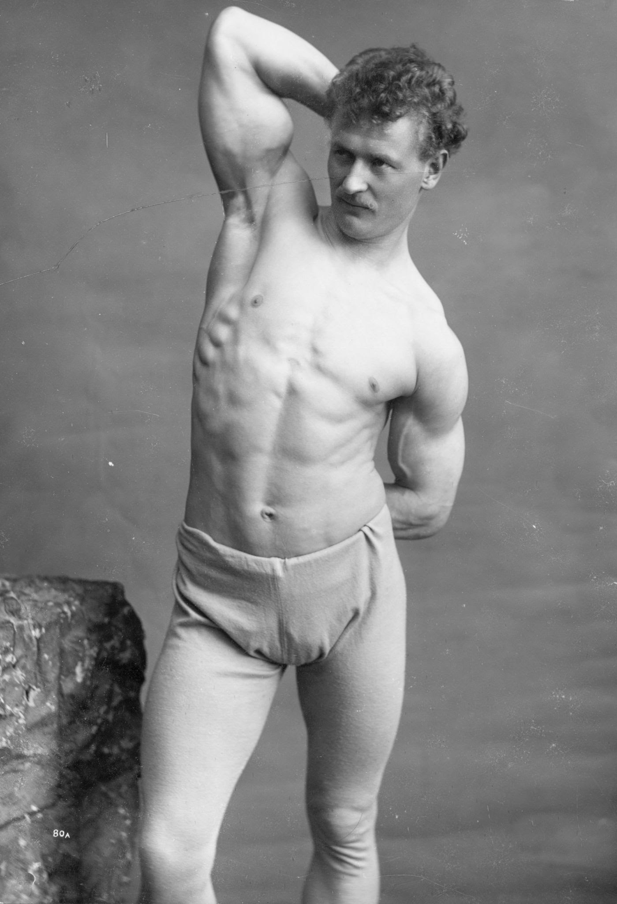
Joe Weider crea el título más prestigioso. El primer ganador es Larry Scott.
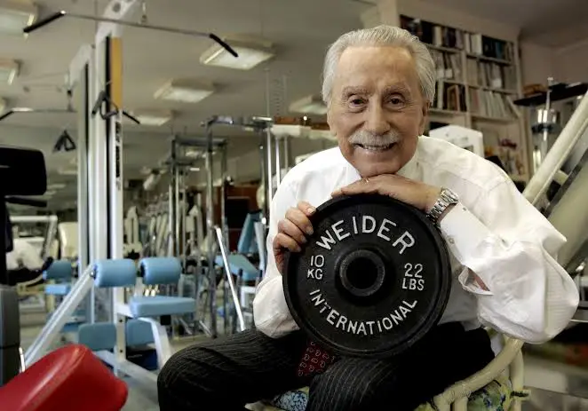
Un documental lleva el culturismo al cine y convierte a Arnold Schwarzenegger en estrella.
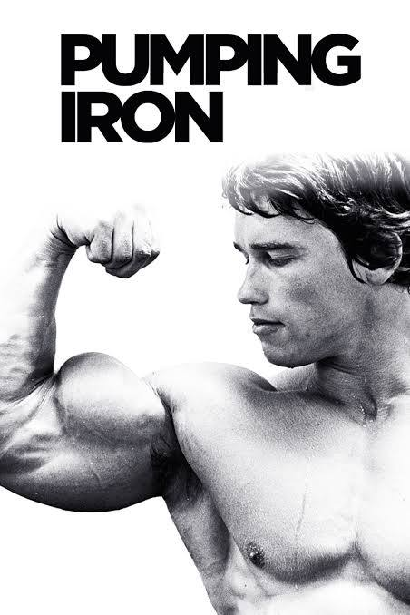
El Olympia se celebra en Las Vegas, hay decenas de categorías y federaciones naturales con controles antidopaje.
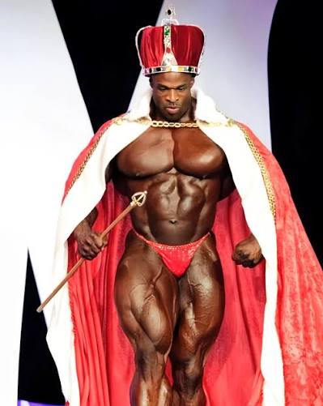
Nadie levanta peso en la competición. Los jueces comparan a los competidores uno al lado del otro y puntúan cuatro cosas:
Cuánto músculo hay, y que se vea lleno y redondo.
Tan poca grasa que se ve cada músculo por separado.
Que todo encaje: izquierda y derecha, arriba y abajo.
Poses, bronceado y cómo te mueves en la tarima.
Como un muro que, cada vez que se agrieta, se repara con más ladrillos de los que tenía.
Si siempre levantas lo mismo, el cuerpo deja de tener motivos para cambiar. Cada semana hay que pedirle un poco más:
5–10 minutos de movilidad y series ligeras de aproximación antes del peso real.
Bajar lento (2–3 s) y subir con fuerza. La bajada es donde más se trabaja y donde más te puedes lesionar si la sueltas.
Mover el peso en todo su recorrido. Cargar de más con medio movimiento es "levantar con el ego".
Ardor o agujetas en el músculo: normal. Dolor punzante en una articulación: se para.
Más del 1 % semanal se come el músculo. Y con poca comida el cuerpo se recupera peor: en un déficit largo se entrena menos volumen y con más control, porque es más fácil lesionarse.
Superávit y mucho entrenamiento. Se construye el músculo que luego se enseña.
Déficit, más pasos y entrenamiento más controlado. Se quita la grasa que tapa el músculo.
Peak week, competición y una subida de comida gradual.
Cada sesión: calentamiento → ejercicios básicos pesados → ejercicios de aislamiento → pasos.
El objetivo es una silueta en X: arriba ancho, cintura estrecha, abajo ancho. Lo que va atrasado se entrena primero en la semana y con más series.
Cada zona tiene su papel en el físico final. Avanza para recorrerlas.
Varía mucho entre personas. En déficit, el cuerpo ahorra energía y te mueves menos sin darte cuenta.
Contar pasos evita que el cuerpo "haga trampas". Y cada paso extra es margen para comer un poco más.
En definición mandan los platos grandes y poco calóricos: verdura, fruta, patata, carne magra, claras de huevo…
Cada botella, 1 litro. Una persona media bebe unos 2 al día.
La ciencia que respalda la manipulación de agua y sal es escasa, y es lo que provoca deshidratación y desmayos en la tarima.
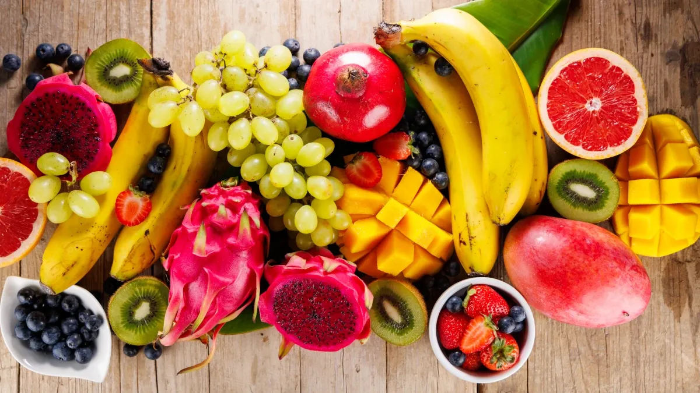
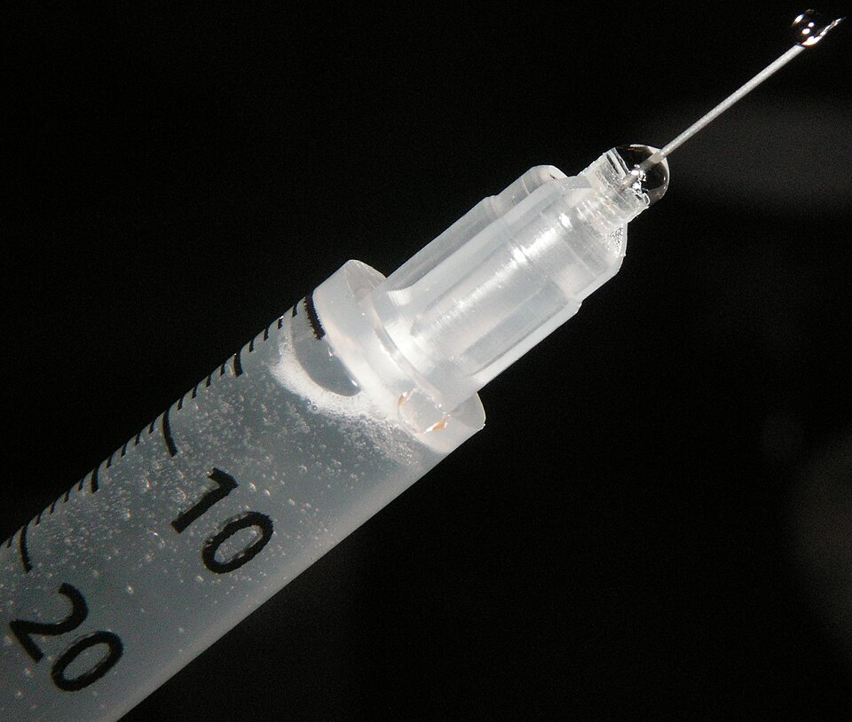
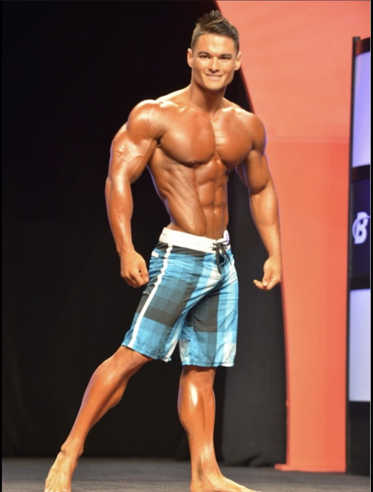
Los anabolizantes derivan de la testosterona, la hormona masculina. En una mujer provocan rasgos propios de un hombre, y algunos no tienen vuelta atrás:
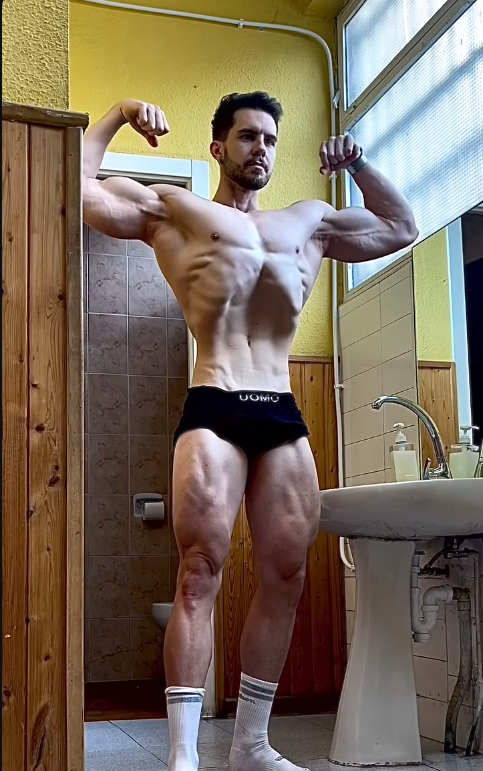
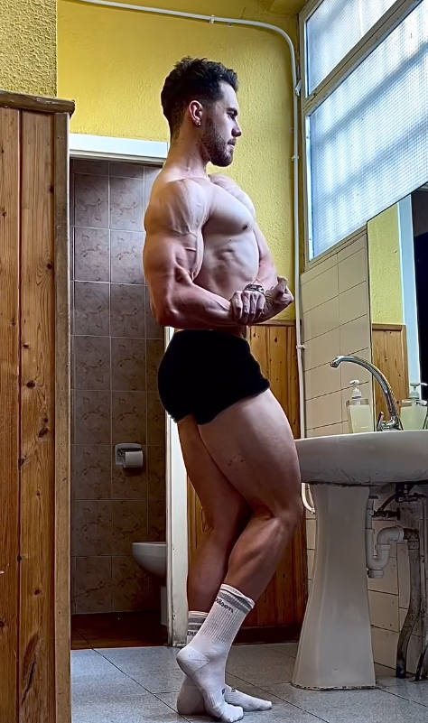
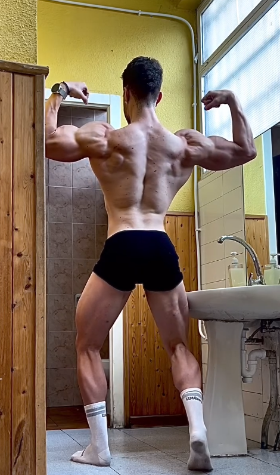
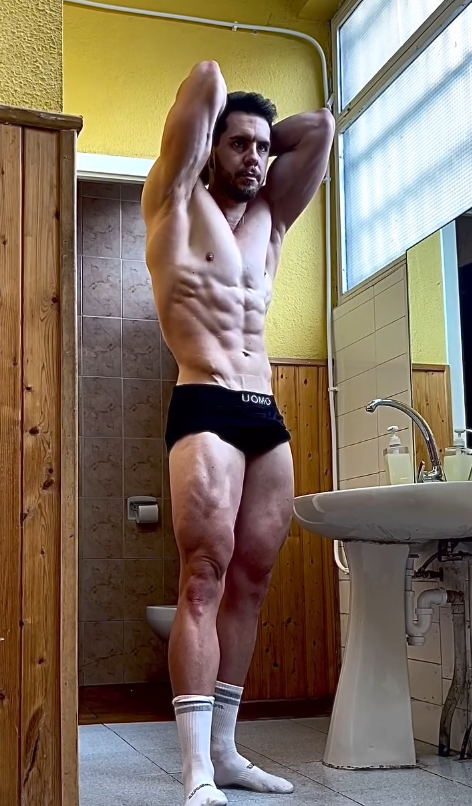
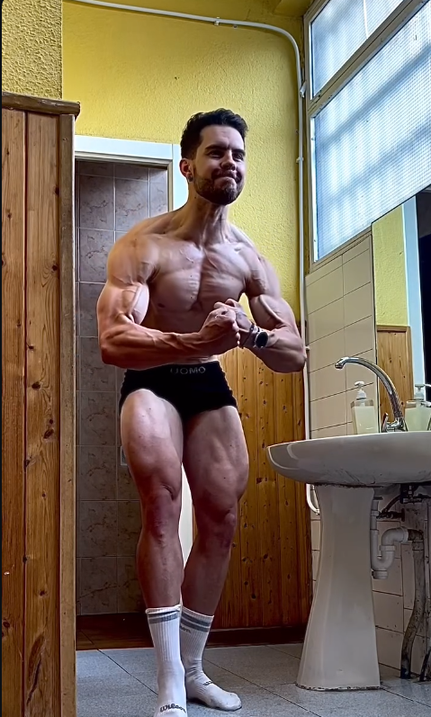
2016El Adrián de 19 años
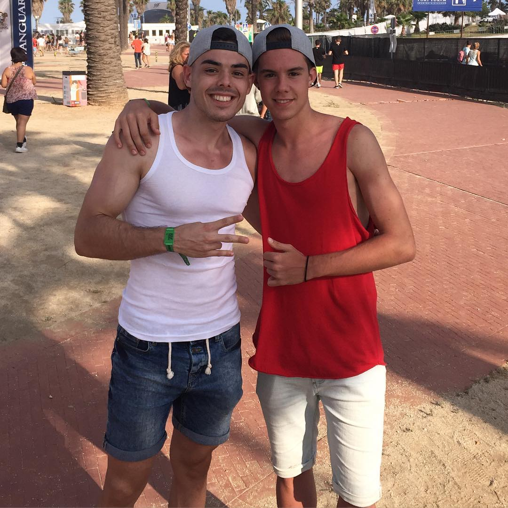
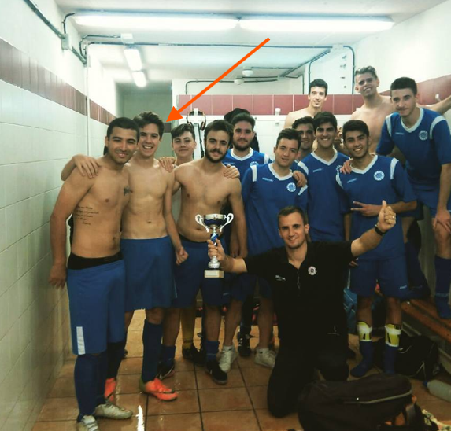
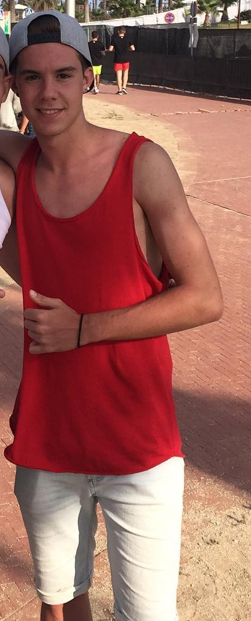
Trofeo Ciudad de Salamanca
Empieza en el 10:54, justo en mi pase sobre la tarima.
youtube.com/watch?v=WPhVSSGvi0A&t=654s Grabación del canal @culturismoweb¿Preguntas?